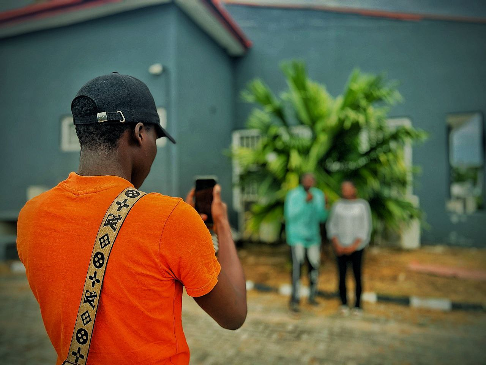
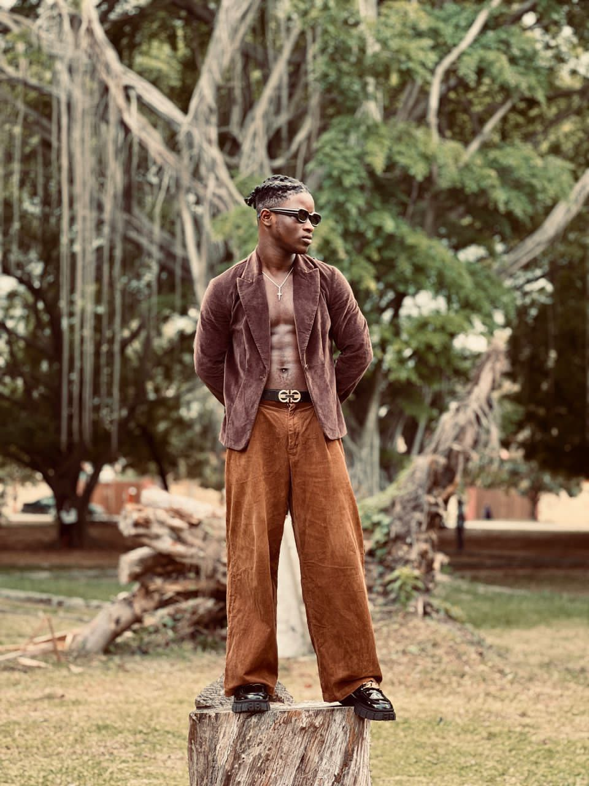

Photography – Tova Shots
Every image you see here is more than a photograph — it’s a declaration. A declaration of light, identity, and intentional beauty. Through the lens of Tova Shots, I don’t just capture faces; I preserve divine essence, raw emotion, and timeless storytelling.
Whether it’s a glowing portrait, a sacred moment, or an untold story whispered through light and shadow, my work is led by purpose — to reveal beauty in every soul and show God in every frame.
Welcome to my visual altar. Let the photos speak.
Gallary

